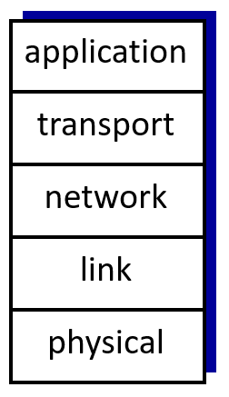
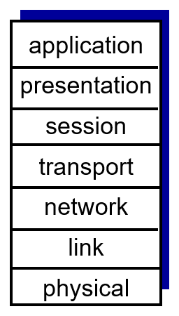
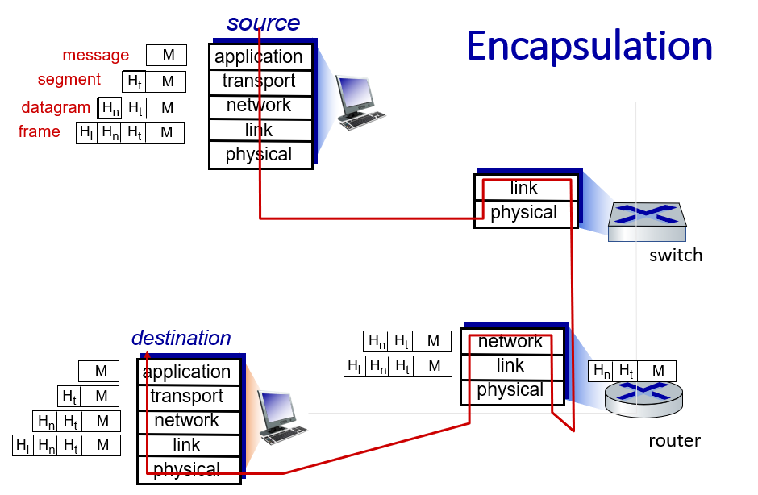

لارا فقهاالرقم الجامعي: 1220071
|
فيرونيكا واكيلهالرقم الجامعي: 1220245
|
فادي باسوسالرقم الجامعي: 1221005
|
تعتبر نظم الشبكات معقدة، وتستدعي استخدام نهج هيكلي لتمكين التواصل بين مكونات الأجهزة والبرمجيات المتنوعة. يساعد مفهوم طبقات البروتوكولات ونماذج الإشارة في تنظيم هذه التعقيدات وتوحيد عمليات التواصل في الأنظمة الشبكية.
لماذا نستخدم الطبقات؟
نماذج الإشارة الرئيسية:
هذا هو النموذج المستخدم في الإنترنت. يحتوي على خمس طبقات:
تقوم كل طبقة بمهمة محددة وتتعاون مع الطبقات فوقها وتحتها.
إليك صورة توضح نموذج بروتوكول الإنترنت:
نموذج OSI هو طريقة أخرى لتنظيم الشبكات. يحتوي على سبع طبقات، مما يجعله أكثر تفصيلاً من نموذج الإنترنت:
على عكس نموذج الإنترنت، يحتوي نموذج OSI على طبقتين إضافيتين: العرض والجلسة. وغالبًا ما يتم دمجهما في طبقة التطبيقات في الأنظمة الحديثة.
إليك صورة توضح نموذج ISO:
كيف تتنقل البيانات (التغليف)
عندما يتم إرسال البيانات عبر شبكة، تضيف كل طبقة من طبقات حزمة البروتوكول معلومات إضافية، تُعرف باسم الرأس، للمساعدة في توصيلها. تنشئ طبقة التطبيقات الرسالة، مثل البريد الإلكتروني، وتمررها إلى طبقة النقل، التي تقسمها إلى أجزاء أصغر تسمى مقاطع. تضيف طبقة الشبكة عنوان الوجهة إلى هذه المقاطع لإنشاء الحزم. ثم تقوم طبقة الربط بتغليف كل حزمة في ما يسمى بالإطار للتسليم المحلي. وأخيرًا، تقوم الطبقة الفيزيائية بتحويل الإطار إلى إشارات، مثل الموجات الراديوية أو الكهربائية، للإرسال. في الطرف المستقبل، يتم عكس هذه العملية. تزيل كل طبقة الرأس المقابل لها خطوة بخطوة، وهي عملية تسمى إزالة التغليف، لإعادة بناء الرسالة الأصلية للمستلم.
ومع ذلك، فإن أحد عيوب الطبقات هو أنها تضيف عملاً إضافيًا إلى عملية الشبكة، حيث تتم إضافة وإزالة الرؤوس في كل طبقة، وهو ما يستغرق وقتًا ويستخدم الموارد. بالإضافة إلى ذلك، قد يكون الهيكل الثابت للطبقات غير فعال في بعض الأحيان، حيث قد لا يوفر دائمًا أسرع طريقة أو الطريقة المثلى للتعامل مع مهام معينة.
الخاتمة
تساعدنا طبقات البروتوكول ونماذج المراجع في إدارة الشبكات من خلال تقسيم المهام إلى أجزاء أصغر وأكثر تنظيمًا. سواء كان ذلك عبارة عن مجموعة أبسط من الإنترنت أو نموذج OSI الأكثر تفصيلاً، فإن هذه الأنظمة تجعل الشبكات أسهل في الاستخدام والإصلاح والترقية. وهي تشكل مفتاحًا لكيفية عمل الإنترنت والشبكات الأخرى اليوم.